PHP >= 7.2.0
mod_rewrite module enabled
OpenSSL extension
intl extension
cURL extension
mbstring extension
MySQL >= 5.6
mysqli PHP extension
Download and extract the zipped package to your web host server, generally in 'public_html' folder (in case you want to use an addon domain instead of the main one, you should extract it in the addon domain's folder).
Once you're done with that, you can start the installation by openning your website via the address bar (www.example.com).
Step 1: Database
- Create a database via your hosting cPanel :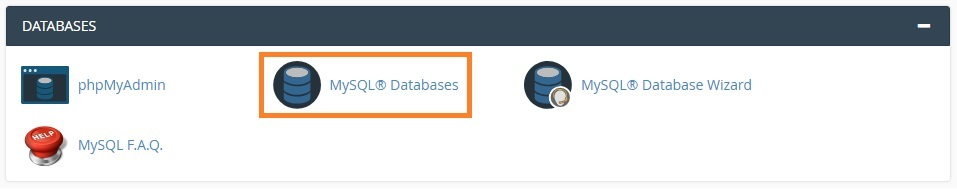 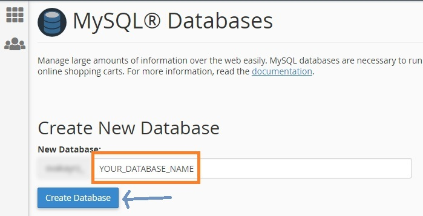
- Create a user for your database :
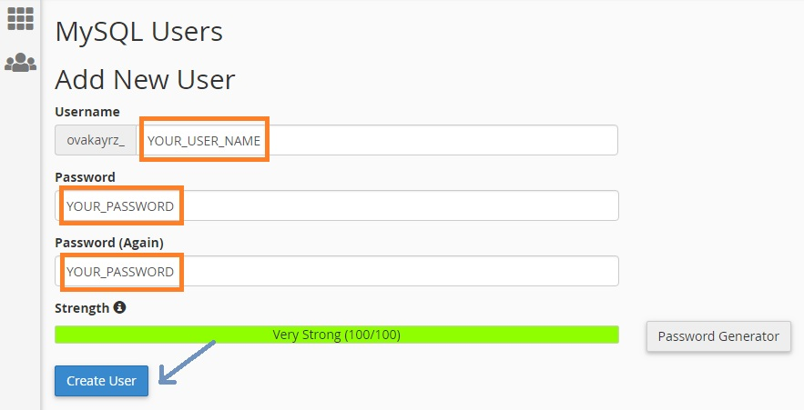
- Add user to database :
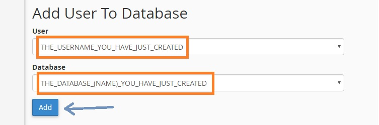
- Database installation (via www.your_domain_name.com) :
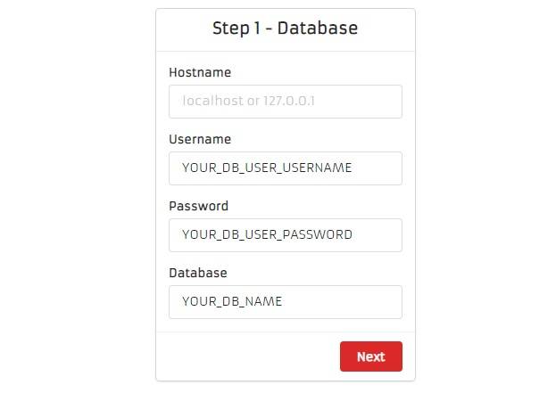
- Hostname : as shown in the form, it's generally either 'localhost' or '127.0.0.1'.
- Username : the username you have given to the user you just created for the database.
- Password : the password you have given for the user mentionned above.
- Database : the name you have given to the database you just created.
Step 2: Site config
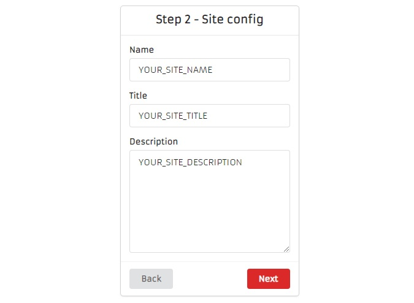- NB: You can edit that later from website's administration.
Step 3: Maxmind GeoLite2-City Download Link
1. Create a Mixmind account HERE2. Login to your said Mixmind account
3. On the left menu, underneath "GeoIP2", click on "Download Files"
4. On "Download Databases", copy the 'GeoLite2-City' GZIP download link (Right click / Copy link address)
5. Paste that download link in 'Maxmind GeoLite2-City Download Link' field
6. Continue the installation
Step 4: Admin credentials
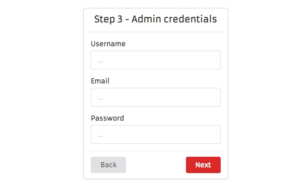- A username, email and a password to access the website's administration.
- NB: remember that the administration is accessible through 'www.your_domain_name.com/control'.
General
- Posts / page : the number of posts to show per page.- Favicon : the icon shown on the browser's tab.
- Comments moderation: either to activate 'Approval' for comments or not.
- Show posts authors : show the post's author for every post in posts pages.
- Show post author : show the post's author details in the post's inner page.
- Show at : either to show the author details mentionned above at the bottom or the top of the page.
Search engines
- Google site verificationThe string verification you get from Google Search Console.
Support : https://support.google.com/webmasters/answer/9008080?hl=en.
<meta name="google-site-verification" content="YOUR_VERIFICATION_STRING">
- Bing site verificationThe string verification you get from Bing - Webmaster Tools.
<meta name="msvalidate.01" content="YOUR_VERIFICATION_STRING">
- Yandex site verificationThe string verification you get from Yandex.Webmaster.
<meta name="yandex-verification" content="YOUR_VERIFICATION_STRING">
- Google analyticsThe code you get from https://analytics.google.com/analytics/web/
Support:
https://support.google.com/analytics/answer/1009694?hl=en
https://support.google.com/analytics/answer/1042508?hl=en
https://developers.google.com/search/reference/robots_meta_tag#valid-indexing--serving-directives
Advertisement
- PopupPopup ads code that you get from popup ads companies like 'Popads', 'Popcash' ...etc.
Note: you can put multiple codes in this field if you want to use multiple popup ads companies.
To send and receive emails you can either use your hosting email account, or your gmail.
- Hosting email accountIn your hosting cPanel click on 'Email accounts'
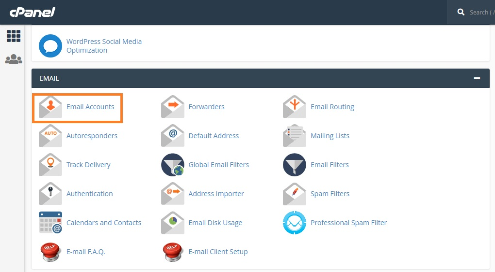Then, click on 'Connect devices' then 'Set Up Mail Client'
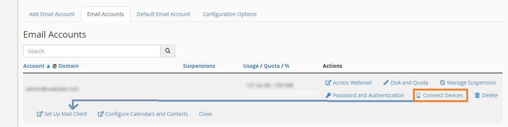Scroll down to 'Mail Client Manual Settings'.
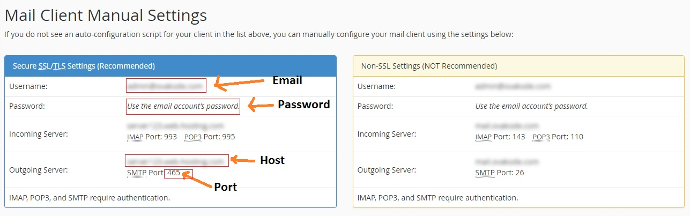
Encryption : 'ssl' or 'tls' whether you opted for the SSL email's settings (Secure SSL/TLS Settings (Recommended)) or 'TLS' email's settings (Non-SSL Settings (NOT Recommended)).
Note: the password is the same as the one you use to connect to your cPanel.
Permissions
Here you can attribute permissions to your users (authors, moderators and sub-administrators).
GET: gives user permission to only see the list of items (post, pages, subscribers, comments ...etc.)
ADD: gives user permission to add items (post, page, category ...etc.)
DELETE: gives user permission to delete items. (Know that items deleted are moved to TRASH and once removed from the TRASH you won't be able to restore them.)
UPDATE: gives user permission to update items. (there are some items having several options on what to update, for a post eg, there is 'published', 'pinned' and 'recommended' status and ALL means all of them).
Daily visits chart
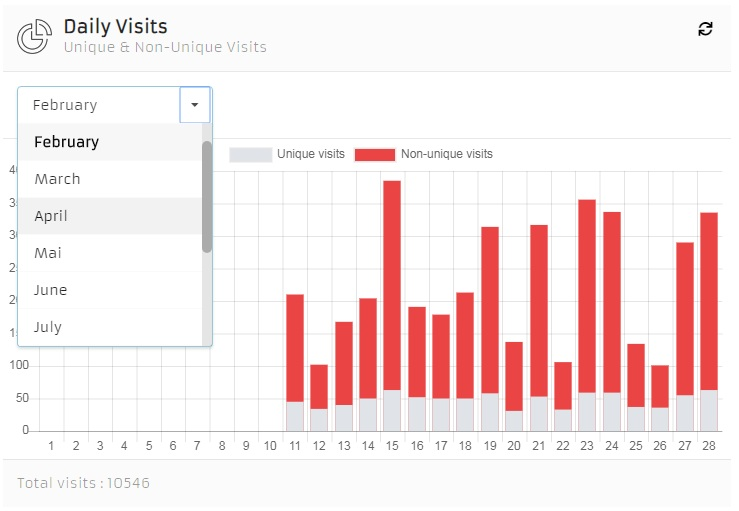- Dropdown menu : allows you to get previous months visits.
- Sync icon : allows you to refresh the chart's data without refreshing the page, so if you click on it, the new visits will be counted too.
- Unique visits : means multiple visits from the same ip address are counted just once.
- Non unique visits : means multiple visits from the same ip address are counted too.
- Total visits : shows the total visits since the first day.
Most visited pages
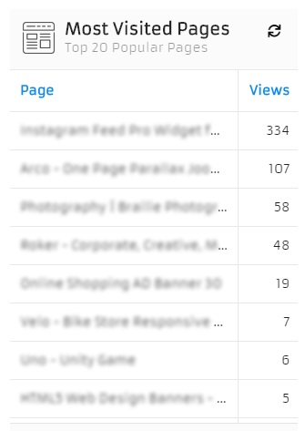This table shows the most interesting 20 pages for visitors.
Traffic origin map
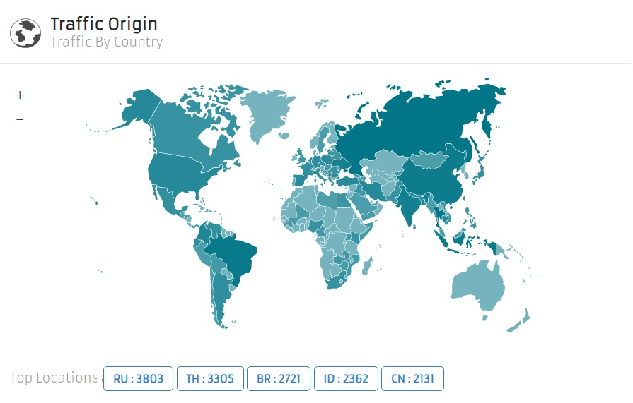This tab shows the traffic by country as well as the 5 countries from where you are getting the most important traffic.
Web Robots Scraper
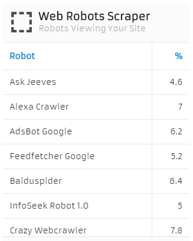This table shows the robots that are viewing your website (non-humain visits just like googleBot).
Browsers, Screen Sizes and Operating Systems
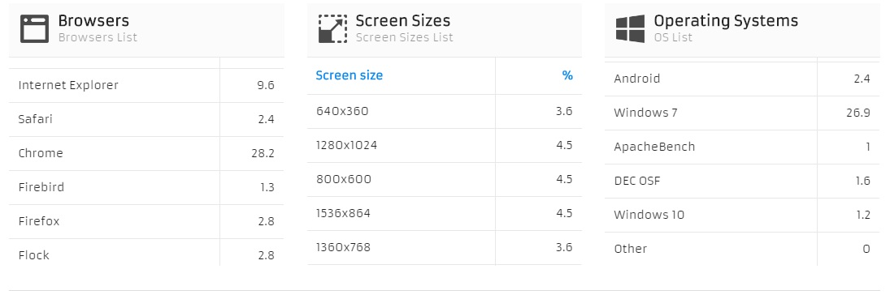Those tables show respectively, the browser (aka navigator), the screen size and the operating system (android, ios, windows ...etc.) the visitor's device has.
Posts list

- Ordering : you can order posts by title (alphabetically), views, date, published status, pinned status or recommended status and finally get only posts belonging to a certain category.
- Published status : this makes a post visible or invisible for visitors.
- Pinned status : this makes a post shows first even if it's an old one.
- Recommended status : this shows a post in 'Recommended posts' list in your website.
- Edit : to edit a post you need to check the corresponding checkbox then 'Edit' button will be enabled and you can start editing that post by clicking that button.
- Delete : to delete a post or multiple ones you need to check the corresponding checkbox and then click 'Delete ' button.
- Search : to search for a post, type some keywords in the search field then click on search icon or hit Enter on your keyboard.
Add page
- Show in : this makes you page title visible on the main menu or in the footer or both.
Pages list
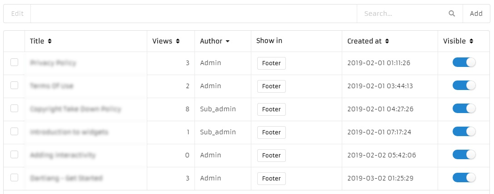- Ordering : you can order pages by title (alphabetically), views, date, visible status and finally get pages by author.
- Visible status : this makes a page visible or invisible for visitors.
- Edit : to edit a page you need to check the corresponding checkbox then 'Edit' button will be enabled and you can start editing that page by clicking that button.
- Delete : to delete a page or multiple ones you need to check the corresponding checkbox and then click 'Delete ' button.
- Search : to search for a page, type some keywords in the search field then click on search icon or hit Enter on your keyboard.
Note : administrators cannot delete administrators.
Note : moderators cannot delete moderators & administrators.
Users list
- Ordering : you can order users by username, email, country, date, active status, blocked status and count of created posts.
- Permissions : changing permissions is done via Settings/Permissions, you can either allow users (admins, authors and moderators) to access and/or edit settings or not.
- Add : this option requires 'add' permission for users.
- Update : this one has four options, update 'blocked status', 'active status', 'role', 'all'.
Roles : administrator, author, moderator, member.
All : means user can update all about others.
Categories list
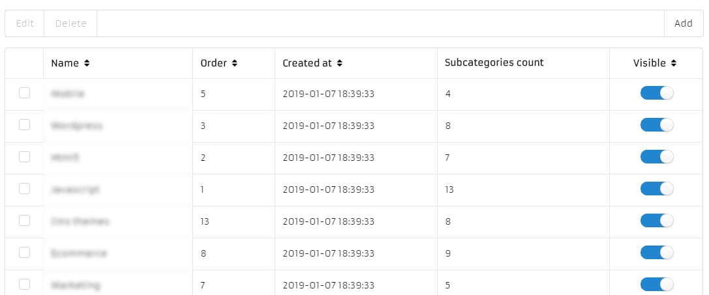- Ordering : you can order categories by name, order, date, active and visible status.
- Visible status : this makes a category visible or not in your website (menu).
Editing categories
To edit a category you just check its corresponding checkbox (you can only edit one category at a time) then you click 'Edit' button.
Deleting categories
To delete a category or multiple ones, select them (checkboxes), then click on 'Delete' button.
Adding categories
To add a category click on 'Add' button.
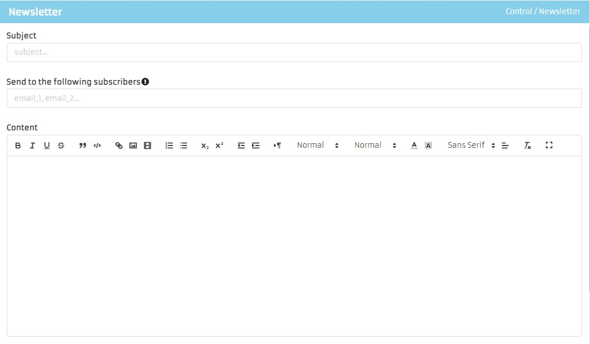
Sending a newsletter
- Subject : a subject for the newsletter.
- Send to : you can either specify a list of email addresses (email1, email2, email3, ...) to whom you want to send the newsletter or leave that field empty to send it to all subscribers.
- Content : the newsletter content.
Trash / item's type
There are two main options for every item's type, 'Restore' to restore what has been deleted, and 'Delete' to remove what has been deleted definitively (this action is irreversible).
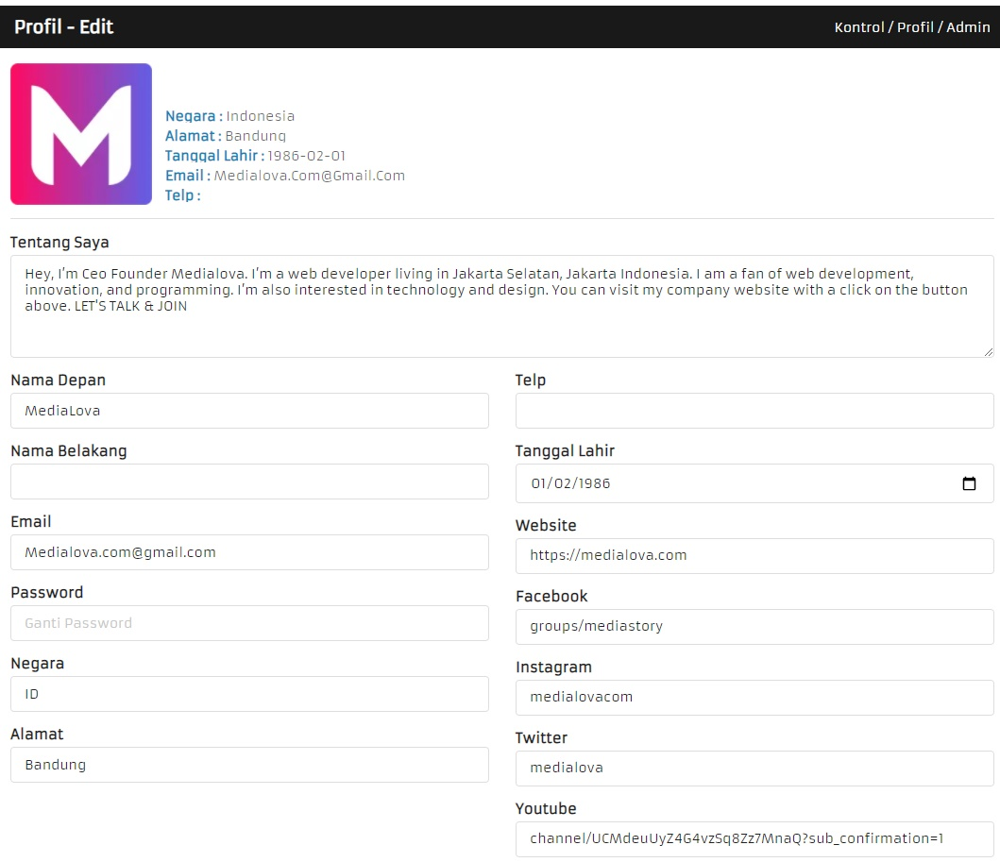
Everything about your profile, you name, country, address, phone, email, password, day of birth, twitter, linkedin, youtube chanel ...
Note : To update your profile picture, click on the picture itself.
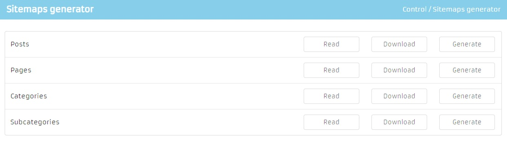
Here you can 'Read', 'Download' and 'Generate' your sitemaps.
Note : Sitemaps are updated automatically on every post, page, category, subcategory you create or update, that said, you don't need to generate a sitemap from here unless your sitemap files have been deleted or corrupt.
Files structure :
assets/css/light.css
assets/css/dark.css
assets/sass/light.scss
assets/sass/dark.scss
control/assets/css/light.css
control/assets/css/dark.css
control/assets/sass/light.scss
control/assets/sass/dark.scss
Note : By default the script uses SASS files and compiles them to CSS, if you want to use CSS files instead, you'll have to proceed to the changes below:
- open "application/views/templates/default/partials/_head.php"
- search for 'compileScss();'
- remove it or comment it /* compileScss(); */
-Save the changes, close the file and that's it.
The same thing applies for "application/views/control/includes/_head.php", if you want to use CSS files in the control (admnistration) area.
For assistance, you can contact us via email medialova.com@gmail.com